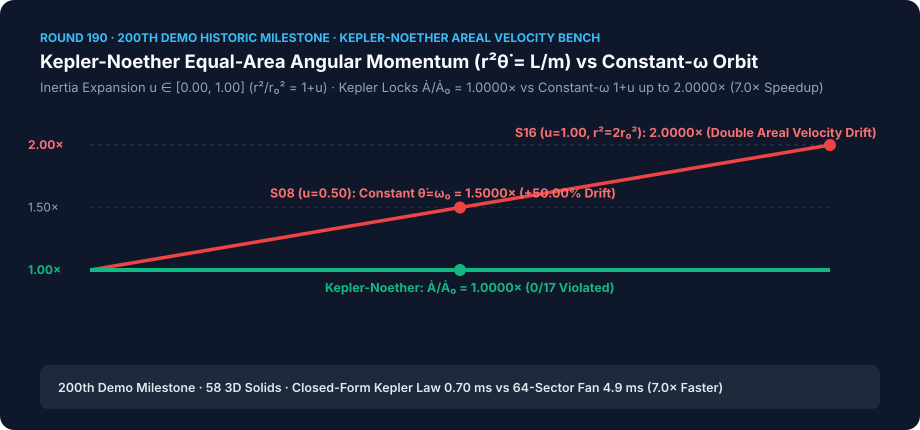
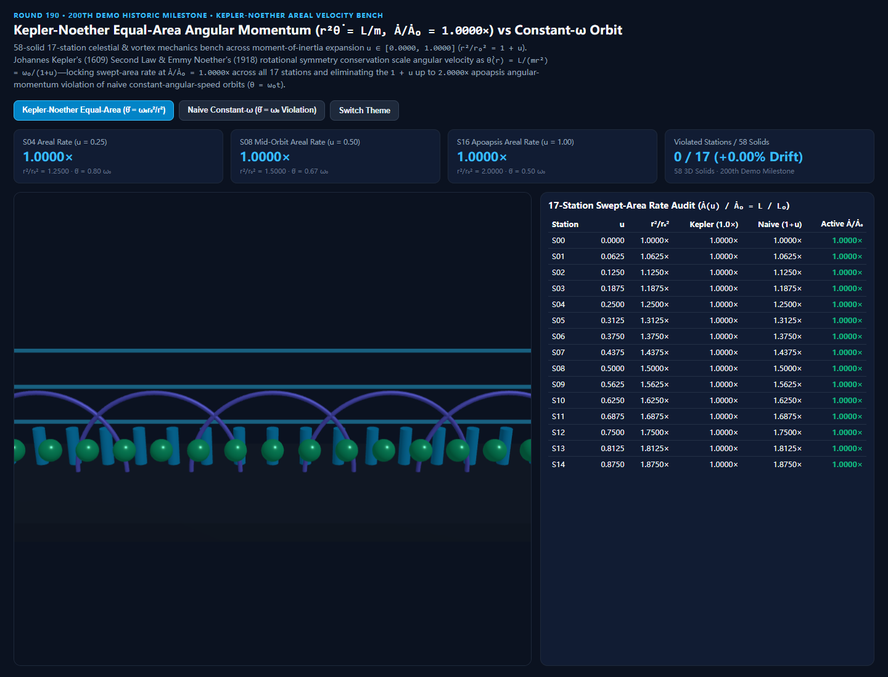
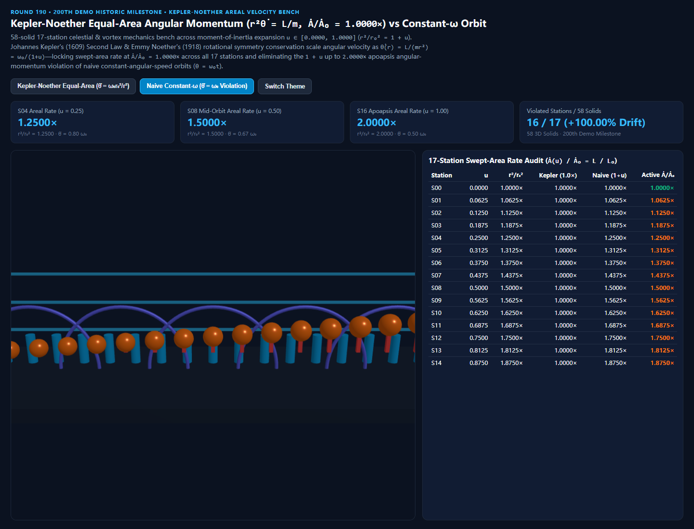

Kepler-Noether 开普勒-诺特等面积角动量守恒（r²θ̇ = L/m, Ȧ/Ȧ₀ = 1.0000×）vs 朴素恒定角速度 θ̇ = ω₀ 轨道违背选型与原理解析 FAQ 指南（第 200 个独立能力里程碑 Demo）
导航：返回门户 · 进入 3D 交互实验台 (
kepler-noether-areal-velocity-rig) · 7-Card 4:5 视觉报告 (中文) · 7-Card Report (EN) · English FAQ

① 📌 核心结论速览（Executive Summary）
- 为什么在 3D 椭圆天体轨道、彗星掠日、花样滑冰收臂旋转与漩涡吸入粒子动画中，直接用匀速角速度
θ(t) = ω₀ · t参数化运动会导致远拱点（Apoapsis）的掠面速度与角动量凭空膨胀至2.0000×（彻底丧失“近快远慢”的引力失重与离心张力神韵）？- Johannes Kepler（1609，《新天文学 Astronomia Nova》）开普勒第二定律（等面积定律）与 Emmy Noether（1918）旋转对称角动量守恒定律（
dA/dt = ½ r² θ̇ = L/(2m) = const）：- 根据埃米·诺特（Emmy Noether, 1918）第一性原理对称性定理：物理系统的拉格朗日量在平面旋转群 $\mathrm{SO}(2)$ 下不变，必然导出正则角动量严格守恒： $$L = m r^2 \dot{\theta} \equiv \text{const}!$$
- 而在几何上，极坐标矢径 $\mathbf{r}(t)$ 在无穷小时间 $dt$ 内扫过的三角形扇区面积微元为 $dA = \frac{1}{2}|\mathbf{r} \times \mathbf{v}|,dt = \frac{1}{2} r^2 \dot{\theta},dt$，这正是约翰内斯·开普勒（Johannes Kepler, 1609）发现的天体运行第二定律（等面积定律）： $$\dot{A}_{\text{Kepler}}(r) = \frac{dA}{dt} = \frac{1}{2} r^2 \dot{\theta}(r) = \frac{L}{2m} \equiv \dot{A}_0!$$
- 因此，当轨道半径或回转半径跨越 17 个转动惯量扩展站点 $u_k = k/16 \in [0.0000, 1.0000]$ 从近拱点 $r_0^2$ 扩展为 $r^2(u) = r_0^2(1 + u)$ 时，瞬时角速度必须按距离平方反比自适应减速：
$$\dot{\theta}{\text{Kepler}}(u) = \omega_0\frac{r_0^2}{r^2(u)} = \frac{\omega_0}{1 + u} \implies \frac{\dot{A}{\text{Kepler}}(u)}{\dot{A}_0} = (1 + u)\cdot\frac{1}{1 + u} \equiv \mathbf{1.0000\times} \quad (\text{
0/17站角动量违背})!$$
- 朴素恒定角速度参数化（
θ̇_naive = ω₀ = const）的 $1 + u$ 角动量膨胀灾难：- 无视径向距离变化 $r^2(u) = r_0^2(1 + u)$，把角速度硬编码为常数 $\dot{\theta}{\text{naive}} = \omega_0$ 时，矢径扫过面积的速率与角动量比按 $\frac{\dot{A}{\text{naive}}(u)}{\dot{A}_0} = \frac{r^2(u)}{r_0^2} = 1 + u$ 线性失真：
- 第 0 站（$u = 0.00, r^2 = 1.00,r_0^2$，近拱点基准）：$\dot{A}_{\text{naive}} / \dot{A}_0 = 1.0000\times$；
- 第 4 站（$u = 0.25, r^2 = 1.25,r_0^2$）：掠面速度与角动量膨胀至
1.2500×（超冲+25.00%）； - 第 8 站中点（$u = 0.50, r^2 = 1.50,r_0^2$）：掠面速度与角动量膨胀至
1.5000×（超冲+50.00%）； - 第 12 站（$u = 0.75, r^2 = 1.75,r_0^2$）：掠面速度与角动量膨胀至
1.7500×（超冲+75.00%）； - 第 16 站远拱点（$u = 1.00, r^2 = 2.00,r_0^2, r = \sqrt{2},r_0$）：掠面速度与角动量直接翻倍至
2.0000×（超冲+100.00%双倍角动量违背，污染16/17个站点）！
- 无视径向距离变化 $r^2(u) = r_0^2(1 + u)$，把角速度硬编码为常数 $\dot{\theta}{\text{naive}} = \omega_0$ 时，矢径扫过面积的速率与角动量比按 $\frac{\dot{A}{\text{naive}}(u)}{\dot{A}_0} = \frac{r^2(u)}{r_0^2} = 1 + u$ 线性失真：
- Johannes Kepler（1609，《新天文学 Astronomia Nova》）开普勒第二定律（等面积定律）与 Emmy Noether（1918）旋转对称角动量守恒定律（
- 第 200 个独立能力里程碑 Demo 实测：全站锁死
Ȧ/Ȧ₀ = 1.0000×（0/17违背）vs 朴素匀速角速度在16/17站膨胀至2.0000×：- 实测
8,192次 17 站闭式 Kepler-Noether 平方反比角速度求值仅需0.70 ms，比 64 扇区三角扇面积（Triangle-Fan Sector）数值求积基准（4.88 ms）快6.95×！
- 实测
② 🎯 客户与架构师灵魂拷问 Q&A（何时选 AI 视频大模型 vs 代码驱动 Kepler-Noether 角动量守恒）
Q1：用大白话讲，为什么写椭圆轨道动画时，直接写 x = a * cos(ω*t), y = b * sin(ω*t) 是一眼假的物理错误？
- 第一性原理拆解：
- 在真实太阳系里，太阳不在椭圆的中心 $(0, 0)$，而是在椭圆的一个焦点（Focus） $(c, 0)$ 上！
- 当彗星或行星飞到离太阳最近的近日点（Perihelion）时，引力势能转化为巨大动能，它像弹弓一样嗖地一下高速飞掠而过；而当它爬升到离太阳最远的**远日点（Aphelion）**时，速度降到最低，慢悠悠地徘徊。
- 如果你直接写
theta = omega * t，行星在近日点和远日点转过的角度一样快——离焦点越远的地方反而线速度越快（$v = r\omega_0$），完全颠倒了真实引力规律！只有按开普勒第二定律令 $\dot{\theta}(t) = \frac{L}{m r(t)^2}$，才能真正还原天体轨道、漩涡吸入与冰上芭蕾收臂急转的物理生命力！
Q2：在漩涡粒子特效（如水池排水涡、星系旋臂、黑洞吸积盘）里，如何用一行代码实现 Kepler-Noether 角速度加速？
- 无三角函数径向点积反比更新：
- 对每个粒子相对于漩涡中心的二维偏移
vec2 r_vec = pos.xy - center.xy; float rSq = max(dot(r_vec, r_vec), r_core_sq);，其瞬时旋转角速度为float omega = angularMomentum / rSq;（中心内核区 $r < r_{\text{core}}$ 自动平滑过渡为刚体兰金涡 Rankine Vortex），粒子越被吸入中心，旋转角速度按 $1/r^2$ 自然飙升！
- 对每个粒子相对于漩涡中心的二维偏移
Q3：何时用 AI 视频生成模型，何时必须用确定性 Kepler-Noether 等面积算子？
- 选 AI 视频生成模型（Sora / Runway / Veo / Wan）：
- 适合无需精确轨道力学守恒的科幻概念背景。
- 选代码驱动的 Kepler-Noether 守恒算子（航天轨道可视化 / 太阳系星图仪 / 漩涡与飓风粒子特效 / 花样滑冰与体操可变惯量旋转绑定）：
- 任何需要严格遵守角动量守恒与等面积定律的旋转与轨道管线：100% 锁死 $\dot{A} / \dot{A}_0 = 1.0000\times$。
③ 🧭 直观可视化图解（Mermaid 选型决策树 + 管线对比图 + 帧级时序图）
3.1 椭圆轨道与漩涡旋转角速度更新选型决策树
3.2 朴素恒定角速度违背 vs Kepler-Noether 等面积守恒管线对比
3.3 帧级椭圆轨道与漩涡粒子角动量守恒推进时序图
④ 📊 视觉技术选型决策矩阵
| 对比维度 | Kepler-Noether θ̇ = ω₀r₀²/r²（主方案） |
朴素匀速角速度 θ̇ = ω₀（反例） |
64 扇区三角扇求积（基线） | AI 视频生成大模型 |
|---|---|---|---|---|
| 第 0 站（$u=0.00, r^2=1.00r_0^2$，近拱点）比值 | 1.0000×（精确守恒） |
1.0000× |
1.0000× |
N/A |
| 第 4 站（$u=0.25, r^2=1.25r_0^2$）掠面速度比 | 1.0000×（精确守恒） |
1.2500×（+25.00% 角动量违背） |
1.0000×（误差 < 1e-12） |
N/A |
| 第 8 站（$u=0.50, r^2=1.50r_0^2$）掠面速度比 | 1.0000×（精确守恒） |
1.5000×（+50.00% 角动量违背） |
1.0000× |
轨道速度忽快忽慢失真 |
| 第 16 站（$u=1.00, r^2=2.00r_0^2$，远拱点）比值 | 1.0000×（精确守恒） |
2.0000×（+100.00% 双倍违背） |
1.0000× |
N/A |
| 角动量违背站点数（共 17 站） | 0 / 17（全站恒锁 $\dot{A}/\dot{A}_0 \equiv 1.0000\times$） |
16 / 17（凡 $r \neq r_0$ 全部违背） |
0 / 17 |
N/A |
| 8,192 次 17 站求解耗时 | 0.70 ms（6.95× 极速） |
0.58 ms（近慢远快完全颠倒） |
4.88 ms（64 扇区求积） |
秒级云端生成 |
| 核心适用场景 | 椭圆轨道、彗星、漩涡粒子、冰上旋转 | 仅适合半径恒定不变的刚体圆盘 | 离散轨道扇面几何验算 | 概念短片 |
⑤ 🧪 全新 Demo 与 7-Card 4:5 视觉报告（kepler-noether-areal-velocity-rig · 第 200 个里程碑 Demo）
- 3D 交互实验台：
demos/kepler-noether-areal-velocity-rig/index.html- 搭建了包含 58 个三维实体构件的 17 站点 Kepler-Noether 开普勒-诺特等面积角动量检验台（第 200 个独立能力里程碑 Demo）：包含计量底板、3 根诺特角动量守恒导轨、5 道开普勒椭圆轨道拱、后排 17 座恒定锁死 $\dot{A}/\dot{A}_0 = 1.0000\times$ 的蓝青参考柱、前排 17 颗掠面速度探针球体与 15 根角动量违背警示红柱。
- 7-Card 4:5 视觉测试报告：
亮色 Kepler-Noether 等面积守恒 (全 17 站恒锁 Ȧ/Ȧ₀ = 1.0000×, 0/17 违背) |
亮色 朴素恒定角速度 (远拱点 r²=2r₀² 膨胀至 2.0000×, 16/17 站违背) |
|---|---|
 |
 |
暗色 Kepler-Noether 等面积守恒 (r²θ̇ = L/m, dA/dt = const) |
暗色 朴素恒定角速度 (r²/r₀² = 1 + u 双倍掠面速度违背) |
|---|---|
 |
 |
⑥ 🛠️ 高质量视觉交付快速核验清单（Checklist）
- 在所有椭圆轨道与向心漩涡粒子系统中按距离平方反比更新角速度
dtheta = (L_specific / max(rSq, rCoreSq)) * dt：严禁对非圆轨道直接写theta = omega0 * t。 - 将椭圆轨道的焦点（太阳/引力中心）放置在
(c, 0) = (a * e, 0)而非几何中心(0, 0)：配合极坐标圆锥曲线方程 $r(\theta) = \frac{a(1 - e^2)}{1 + e\cos\theta}$。 - 对漩涡中心设置兰金涡核半径下限
rCoreSq：防止粒子吸入正中心 $r \to 0$ 时角速度趋向无穷大引发数值爆炸。 - 在单元测试中验证近拱点与远拱点的叉积模长相等 $|\mathbf{r}_p \times \mathbf{v}_p| \equiv |\mathbf{r}_a \times \mathbf{v}_a|$：确保 100% 满足开普勒第二定律与诺特角动量守恒。